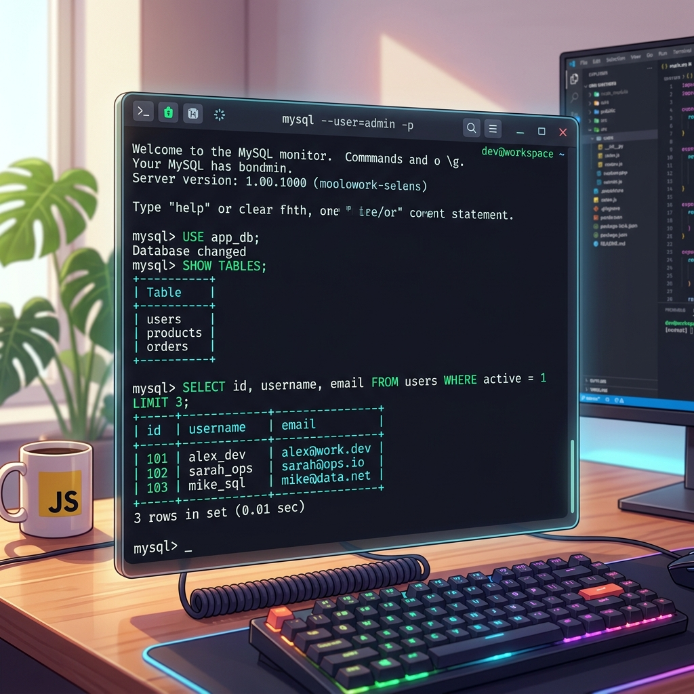

သင်ခန်းစာ ၄ — Command Line (Terminal) အသုံးပြုနည်း

Command Line Client သို့မဟုတ် Terminal မှတစ်ဆင့် MySQL Server သို့ တိုက်ရိုက် စာရိုက် ရေးသားပနာ ချိတ်ဆက် အသုံးပြုနည်း ဖြစ်ပါသည်။ Command Line (Terminal သို့ Console ဟုလည်း ခေါ်သည်) ဆိုစွာ SQL Command များကို စာရိုက်ပနာ တိုက်ရိုက် ခိုင်းစေသည့် နေရာဖြစ်ပါတယ်။ Developer များစွာစွာ လျင်မြန်ပနာ စွမ်းအားထက်မြက်သည့်အတွက် ဒေနည်းလမ်းကို ပိုမို ကြိုက်နှစ်သက်ကြပါတယ်။
🎨 Command Line အလုပ်လုပ်ပုံ မျက်မြင် visual ပုံရိပ်
┌─────────────────────────────────────────────────────────────────────────┐
│ Your Computer Terminal Window │
├─────────────────────────────────────────────────────────────────────────┤
│ user@computer:~$ mysql -u root -p │
│ Enter password: ******** │
│ │
│ Welcome to the MySQL monitor! Commands end with ; or \g. │
│ │
│ mysql> USE shop; │
│ Database changed │
│ │
│ mysql> SELECT * FROM customers LIMIT 3; │
│ +----+--------------+-----------+--------------------+ │
│ | id | first_name | last_name | email | │
│ +----+--------------+-----------+--------------------+ │
│ | 1 | U | Ba | uba@gmail.com | │
│ | 2 | Daw | Hla | hla@gmail.com | │
│ | 3 | Ko | Aung | aung@gmail.com | │
│ +----+--------------+-----------+--------------------+ │
│ 3 rows in set (0.01 sec) │
│ │
│ mysql> EXIT; │
│ Bye │
│ │
│ user@computer:~$ │
└─────────────────────────────────────────────────────────────────────────┘
ခန့်မှန်း ကြာချိန် - မိနစ် ၃၀
💡 Command Line ဆိုစွာ ဇာလဲ?
Command Line ဆိုစွာ မျက်ပြင် ခလုတ်များကို နှိပ်စရာ မလိုဘဲ စာသား Command များ ရိုက်ထည့်ပနာ MySQL နန့် တိုက်ရိုက် စကားပြောသည့် စနစ်ဖြစ်ပါတယ်။
| Tool | အသုံးပြုပုံ | အသင့်တော်ဆုံး နေရာ |
|---|---|---|
| Workbench | ခလုတ်များ၊ Menu များကို နှိပ်သည် | အစပျိုးသူများနန့် မျက်ပြင် ကြည့်ရှုလိုသူများ |
| Command Line | စာရိုက်ပနာ Command ပေးသည် | မြန်ဆန်မှု၊ Auto စနစ်များနန့် Server အသုံးပြုသူများ |
🚀 အဆင့် ၁ - Terminal ကို ဖွင့်ပါ
- Windows မာ:
Windows Key + Rကို နှိပ်ပနာcmdဟု ရိုက်ထည့်ပနာ Enter နှိပ်ပါ။ - Mac မာ:
Cmd + Spaceနှိပ်ပနာ "Terminal" ဟု ရိုက်ရှာပါ။ - Linux မာ:
Ctrl + Alt + Tကို နှိပ်ပါ။
မီးလင်းနိသော Cursor လေး ပါသည့် Terminal စာမျက်နှာ ပေါ်လာပါဖို့ -
C:\Users\yourname> (Windows)
user@computer:~$ (Mac/Linux)
🔌 အဆင့် ၂ - MySQL ထို့ ချိတ်ဆက်ပါ (Connect)
Terminal မာ အောက်ပါ command ကို ရိုက်ထည့်ပနာ Enter နှိပ်ပါ -
mysql -u root -p
🔍 Command တစ်ခုချင်းစီ၏ အဓိပ္ပာယ် -
mysql— MySQL Program ကို ဖွင့်ရန် ခိုင်းခြင်း-u root— "root" user (အုပ်ချုပ်သူ အကောင့်) ဖြင့် Log in ဝင်ခြင်း-p— Password တောင်းဆိုခိုင်းခြင်း
┌──────────────┐ ┌──────────────────┐ ┌─────────────────┐
│ Terminal │ │ MySQL Client │ │ MySQL Server │
│ Command │────►│ Login & SQL │────►│ Password စစ် │
│ $ mysql -u │ │ Commands ပို့ │ │ ရလဒ် ပြန်ပို့ │
│ root -p │◄────│ Data ပြန်လက်ခံ │◄────│ │
└──────────────┘ └──────────────────┘ └─────────────────┘
Enter password: ဟု ပေါ်လာပါက Root Password ကို ရိုက်ထည့်ပါ (Password ရိုက်နေချိန် စာလုံးများ ပေါ်မည်မဟုတ်ပါ၊ စိတ်မပူပါနန့်)။
အတည်ပြုပြီးပါက mysql> ဟု ပေါ်လာပါဖို့။ ယင်းသည် MySQL ထဲသို့ အောင်မြင်စွာ ရောက်ရှိသွားပြီဖြစ်ပါတယ်။
⚡ အဆင့် ၃ - ပထမဆုံး Command ကို စမ်းသပ်ပါ
mysql> Prompt မာ အောက်ပါအတိုင်း ရိုက်ထည့်ပနာ Enter နှိပ်ပါ -
SELECT 'Hello, MySQL!';
အောက်ပါအတိုင်း ရလဒ် ထွက်လာပါဖို့ -
+------------------+
| Hello, MySQL! |
+------------------+
| Hello, MySQL! |
+------------------+
1 row in set (0.00 sec)
🛠️ အဆင့် ၄ - အသုံးဝင်သော command များ
Database စာရင်း ကြည့်ရန် -
SHOW DATABASES;
လက်ရှိ အသုံးပြုနေသော Database ကို ကြည့်ရန် -
SELECT DATABASE();
Table ၏ အဆောက်အအုံကို စစ်ဆေးရန် -
DESCRIBE table_name;
MySQL ထွက်ရန် -
EXIT;
(သို့မဟုတ် QUIT; ဟုလည်း ရိုက်နိုင်ပါသည်)
⚠️ အရေးကြီးသော စည်းမျဉ်း - Semicolon (;) ပါရမည်
SQL Command တိုင်း၏ အဆုံးမာ Semicolon (;) မဖြစ်မနေ ပါရပါမည်။
Semicolon မပါပါက (MySQL မှ စောင့်ဆိုင်းနေမည်):
mysql> SELECT * FROM users
->
-> ; (Semicolon ရိုက်ထည့်မှသာ Run ပါမည်)
SELECT * FROM users; -- မှန်ကန်သည် ✓
SELECT * FROM users -- မှားယွင်းသည် ✗ (Semicolon မပါပါ)
🎨 Multi-Line Query ရေးသားပုံ Illustration
SQL Command များကို စာကြောင်း တစ်ကြောင်းမက ခွဲပနာ ရေးသားနိုင်ပါတယ်။ Semicolon ရိုက်မချင်း MySQL မှ ဆက်လက် စောင့်ဆိုင်းပေးထားပါဖို့ -
SELECT first_name,
last_name,
email
FROM users;
📄 SQL Script File ကို Command Line မှ Run နည်း
.sql ဖိုင်ထဲဟိ Command များကို တိုက်ရိုက် Run လိုပါက -
mysql -u root -p shop < /path/to/script.sql
သို့မဟုတ် MySQL ထဲရောက်မှ Run လိုပါက -
SOURCE /path/to/script.sql;
⌨️ Command Line သုံးစွဲသူများအတွက် အသုံးဝင်သော Tips
- Up Arrow (↑) — ယခင် ရိုက်ခဲ့သော Command များကို ပြန်ခေါ်ရန်
- Tab Key — Table သို့မဟုတ် Column အမည်များကို Auto စာလုံး ဖြည့်ရန်
- Screen ရှင်းရန်:
- Mac/Linux မာ:
system clear - Windows မာ:
system cls
- Mac/Linux မာ:
📝 လေ့ကျင့်ခန်း (Exercise)
- Terminal ကို ဖွင့်ပါ။
- MySQL သို့ ချိတ်ဆက်ပါ (
mysql -u root -p) SHOW DATABASES;ကို Run ပါ။SELECT VERSION();ဖြင့် MySQL Version ကို ကြည့်ပါ။EXIT;ဖြင့် ပြန်ထွက်ပါ။
➡️ နောက်ထပ် သွားရမည့် အဆင့်
ယခုဆိုရင် Workbench နန့် Command Line နှစ်ခုလုံး သုံးတတ်သွားပြီဖြစ်လို့ အချက်အလက်များပါဝင်သော Sample Database ထည့်သွင်းပနာ ပထမဆုံး Query များကို စတင် ရေးသားကြပါစို့။